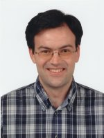
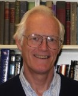
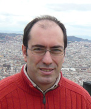
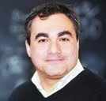

| Siesta Contributors | ||
List of contributors to the development of SIESTA
| Siesta Steering Committee | ||
| Emilio Artacho |
|
| Institution:CIC NanoGune (San Sebastian) and University of Cambridge | |
| Web: http://theory.nanogune.eu | |
| E-mail: e.artacho ( at ) nanogune.edu | |
| José M. Cela |

|
| Institution: Barcelona Supercomputing Center | |
| Web: http://www.bsc.es/about-bsc/staff-directory/cela-espin-jose-maria | |
| E-mail: josem.cela ( at ) bsc.es | |
| Julian Gale |

|
| Institution: Curtin University of Technology | |
| Web: https://chemistry.curtin.edu.au/people/academic.cfm/J.Gale | |
| E-mail: julian ( at ) ivec.org | |
| Alberto García |

|
| Institution: Instituto de Ciencia de Materiales de Barcelona (ICMAB - CSIC) | |
| Web: http://www.icmab.es/leem/alberto | |
| E-mail: | |
| Javier Junquera |  |
| Institution: Universidad de Cantabria (UNICAN) | |
| Web: http://personales.unican.es/junqueraj | |
| E-mail: | |
| Richard M. Martin |  |
| Institution:Formerly at the Univ. of Illinois at Urbana | |
| Web: http://people.physics.illinois.edu/rmartin/ | |
| E-mail: rmartin ( at ) uiuc.edu | |
| Pablo Ordejón |  |
| Institution: Centro de Investigación en Nanociencia y Nanotecnología (CSIC-ICN) | |
| Web: http://www.cin2.es/groups/theory | |
| E-mail: | |
| Nick R. Papior |

|
| Institution: Technical University of Denmark (DTU Nanotech) | |
| Web: DTU | |
| E-mail: | |
| Daniel Sánchez-Portal |  |
| Institution: Centro de Física de Materiales CSIC/UPV-EHU | |
| Web: http://dipc.ehu.es/group/Sanchez.htm | |
| E-mail: | |
| José M. Soler |

|
| Institution: Universidad Autónoma de Madrid (UAM) | |
| Web: http://www.uam.es/jose.soler | |
| E-mail: jose.soler ( at ) uam.es | |